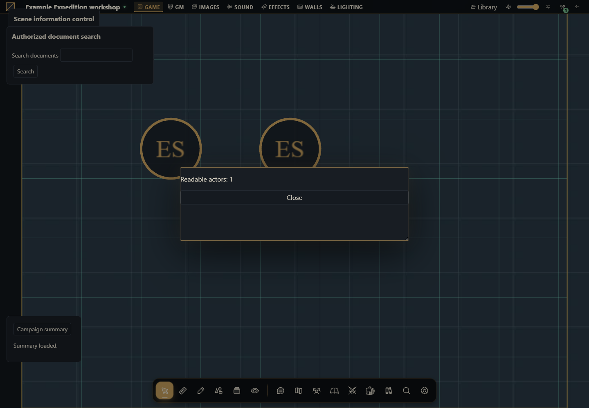

Create, install and update your first module
From an empty folder to a table button, with complete files, installation, activation and a second version.


What you will build
A browser module named Example campaign summary. It adds a Campaign summary button to the table, reads actors the caller may open and displays their count in a native modal. The result is a ZIP installed through the UI. You do not need to modify VTT source, install an npm SDK or configure a Python server for this module.
You need a Gravewright 0.3.0 development installation, installation-owner access to install code and a GM account in a test campaign. Use a text editor and Python in your terminal to write and package files. If your current installation contains valuable campaigns, prepare another development installation. Installation owner and campaign GM are different permissions.
1. Start with an empty folder
Create campaign-summary in your development work area. Save these four files as UTF-8. Check extensions: main.mjs.txt is not main.mjs. You may also download the finished project, extract it and compare each file.
campaign-summary/
manifest.json
main.mjs
styles.css
LICENSE.txtDo not put a database, .env, credentials or campaign files here. The ZIP needs only module files. The following source matches the download.
2. Declare the package in manifest.json
{
"id": "example.campaign-summary",
"name": "Example campaign summary",
"version": "1.0.0",
"sdk": {
"requires": ">=1.0.0 <2.0.0",
"tested": "1.0.0"
},
"description": "Adds an authorized read-only summary in a native modal.",
"author": "Gravewright documentation examples",
"license": "GPL-3.0-only",
"entry": "main.mjs"
}id identifies the package across versions. name is displayed to the owner and GM. version identifies immutable bytes. entry is a path inside the ZIP. sdk describes the module contract rather than the VTT release. Do not add kind: journal or type: compendium: behavior comes from code and supported manifest blocks.
3. Write main.mjs
export default {
start({styles}) { styles.use('styles.css'); },
register({register}) {
register('table.interface', ({root, api, signal, onDispose}) => {
const doc=root.ownerDocument;
const panel=doc.createElement('section');
panel.className='example-panel';
const button=doc.createElement('button');
button.type='button';
button.textContent='Campaign summary';
const status=doc.createElement('p');
status.setAttribute('role','status');
panel.append(button,status);
root.append(panel);
let modal;
button.addEventListener('click', async () => {
button.disabled=true;
try {
const actors=await api.actors.list({}, {signal});
if(signal.aborted) return;
if(modal) await modal.close();
if(signal.aborted) return;
const content=doc.createElement('section');
content.setAttribute('role','dialog');
content.setAttribute('aria-modal','true');
content.setAttribute('aria-label','Campaign summary');
const text=doc.createElement('p');
text.textContent='Readable actors: '+actors.filter(actor=>actor.canOpen).length;
const close=doc.createElement('button');
close.type='button';close.textContent='Close';
content.append(text,close);
modal=api.ui.openModal(content);
close.addEventListener('click',()=>void modal.close(),{signal});
status.textContent='Summary loaded.';
} catch(error) {
if(!signal.aborted) status.textContent=error.code || 'unavailable';
} finally { if(!signal.aborted) button.disabled=false; }
},{signal});
onDispose(()=>{panel.remove();});
});
},
stop() {}
};start loads styles once per activation. register declares an extension for table.interface. Its callback runs when the table offers that surface and receives an owned root, a mount-scoped api and a cancellation signal. Reading happens on click. actors.list returns the authorized collection; canOpen distinguishes readable documents from listing-only entries.
api.ui.openModal uses the VTT modal infrastructure. The example does not create an HTML dialog element or call alert. The signal prevents a late read from opening a window after deactivation. onDispose removes the panel; signal-bound listeners are cancelled with the mount.
4. Write styles.css and copy the license
.gw-module-root .example-panel { padding: var(--space-4, 16px); font-size: 14px; }
.gw-module-root .example-panel label { display: block; margin-bottom: var(--space-3, 12px); }
.gw-module-root .example-panel button { margin-right: var(--space-2, 8px); }
.gw-module-root[data-module-id="example.campaign-summary"] .example-panel { position: fixed; left: 16px; bottom: 112px; z-index: 20; max-width: min(360px, calc(100vw - 32px)); border: 1px solid var(--border); border-radius: var(--radius-md); background: var(--surface); color: var(--text); pointer-events: auto; }The data-module-id selector scopes table positioning to this package. Its panel appears above the table and below native windows while leaving controls available.
Download the complete LICENSE.txt into the folder with that exact name. Preserve the notice when reusing this example. The sample uses GPL-3.0-only; choose the appropriate license for a different original module and keep its manifest and license file consistent. Do not distribute just a license label without its text.
5. Build and inspect the ZIP
In PowerShell, starting in the folder containing campaign-summary:
Set-Location .\campaign-summary
python -m json.tool manifest.json
python -m zipfile -c ..\campaign-summary-1.0.0.zip manifest.json main.mjs styles.css LICENSE.txt
python -m zipfile -l ..\campaign-summary-1.0.0.zipOn Linux/macOS:
cd campaign-summary
python3 -m json.tool manifest.json
python3 -m zipfile -c ../campaign-summary-1.0.0.zip manifest.json main.mjs styles.css LICENSE.txt
python3 -m zipfile -l ../campaign-summary-1.0.0.zipjson.tool must finish without errors. The archive listing must show manifest.json at its root beside main.mjs. campaign-summary/manifest.json means you zipped the folder instead of its contents. Close the archive before installation.
6. Install as the installation owner
Enter Inside and open Modules.
Select Install module, then Install from ZIP.
Choose campaign-summary-1.0.0.zip in ZIP file and press Install.
Wait for Example campaign summary 1.0.0 to appear. Campaign activation is still required.
Local upload is the development path for owner-reviewed code. Marketplace publication uses its separate signed-catalog workflow. Installing a ZIP does not enable it on every table.
7. Activate as GM and inspect the result
Open a test campaign as GM. Open the Gravewright menu, select Extensions, then Table modules. Find Example campaign summary 1.0.0 and click Activate.
Return to the table. Campaign summary appears near the lower-left corner.
Create an actor through the native directory, give the caller appropriate access and click the button. With one readable actor, the modal displays Readable actors: 1; the count depends on campaign data.
Close using Close or Escape. Reopen, then deactivate the module. Its button disappears while actors remain in the campaign.
If the campaign has no system declaring actor types, first test a zero count or select an appropriate system in your development campaign. Do not invent an actor type just to load this module.
8. Make a change and install version 1.0.1
In main.mjs, change the button text from Campaign summary to Campaign notebook. In manifest.json, change version from 1.0.0 to 1.0.1 while keeping id. Build another ZIP containing the same four files, named campaign-summary-1.0.1.zip, then install it.
Activate 1.0.1 on the table and check its new text and action. Installing a newer version does not automatically change a table's selection. Do not modify installed package files or reinstall changed bytes as 1.0.0: the installer may reject that with conflict. There is no source-folder hot reload. The cycle is edit, increment version, package, install and activate.
9. Locate the failing stage
| Symptom | Check |
|---|---|
| ZIP rejected | Root layout, valid JSON, existing entry, license and numeric version |
| conflict during installation | Same id/version already has different bytes; install 1.0.1 |
| Installed but no button | GM account, exact table activation and main.mjs import errors |
| Button appears but read fails | Caller access, network and the panel's error.code |
| Player sees a different count | Actor permissions; each account reads its authorized collection |
| Old label remains | Active version, open tabs and reload after selecting the new release |
Open browser developer tools and inspect Console and Network while reproducing the action. Never paste session cookies or tokens into an issue. The entry must be a valid ES module; removing export default prevents loading.
10. Choose your next implementation
Create a journal module: two mounts, document creation and an action in an open journal.
Act on a sheet: edit generic data without losing existing fields.
Create a compendium module: create campaign content and capture snapshots.
Ship compendiums with a system: JSON files and manifest in one ZIP.
How to use AI to adapt this project
Start from the tutorial campaign-summary ZIP on Gravewright 0.3.0. Replace its summary with [action]. Explain whether table.interface remains appropriate or another mount is needed. Deliver complete main.mjs, manifest.json and CSS. Preserve the scoped API, signal, onDispose and native modal. Increment the package version and explain testing after installation/activation, including console diagnostics.